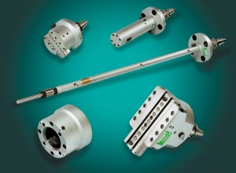

ZX™
Boring, Facing, & Contouring
Systems
Machine
Contoured Surfaces
In one Setup

Cogsdill's ZX Tooling System provides the ultimate solution in terms of productivity, flexibility, and accuracy for machining large parts that require multiple operations. The ZX system can perform a variety of precision machining operations on horizontal boring mills, including:
{kind=link}
- Boring
- Facing
- Contouring
- Taper Boring
- Deep Cavity Boring
- Grooving
- Back-spotfacing
- Chamfering
- Bottle Boring
The Cogsdill ZX range of Contouring and Boring tools, allow relatively simple 2-axis CNC programs to perform a variety of machining operations. Part changes can be accommodated quickly and easily with program changes.
Operations that were previously performed manually can be converted to CNC Control, thus improving productivity, accuracy, part to part repeatability and improved surface finish.
Machine Tool Requirements
The ZX™ system requires the use of a horizontal boring mill with a programmable inner spindle that rotates in unison with the outer spindle, or milling sleeve. The axial movement of the inner spindle is converted within the tool into radial cutting stroke for diameter control. Movement of the table, or machine column, on a parallel axis controls the axial location of the cutting edge relative to the part. In most horizontal boring mills, these two axes are referred to as "W" and "Z".
- Controlled inner spindle movement is converted into radial cutter movement
- Independently controlled column or table movement parallel to spindle
Operating Principles
The ZX system is comprised of two basic styles of tools:
- Facing / contouring heads, featuring a single slide onto which
various top tooling can be installed. - Boring / contouring tools, used primarily in boring operations inside parts.
Regardless of head type, a proven actuation mechanism produces radial cutter movement. This sturdy design is based on the "sliding inclined wedge" principle for backlash-free operation; no sloppy gears or bell cranks are used. All parts are hardened and ground for lasting accuracy and durability.
{kind=link}
ZX Contouring & Facing Head
The Cogsdill ZX Facing/Contouring heads offer the Greatest versatility of all from the Cogsdill ZX Tooling range. These heads have a single tool slide; onto which top tooling is mounted into qualified locating holes. This provides for repeatable set-ups.
With appropriate top tooling, these heads can perform boring, facing, taper boring, radius forming, chamfering, recessing and threading. Large parts can be machined in one set-up without having to remove the work piece. Internal Coolant is optional.
- Perform Lathe-type operations on boring mills
- Maximum application flexibility
- Large Diameter Range (from 0mm to 1270mm on ZX900)
- Accepts industry-standard top tooling components and inserts (Modular tooling packages also available)
- Qualified tool location points in tool slide for accurate and repeatable set-ups
- Backlash-free operation
Modular Boring Tool

Cogsdill ZX Modular Boring Tools (MBT) offer versatility and economy when machining bores, counter-bores, tapers, threads and complex contours inside components over a wide range of diameters. These tools offer the highest cutting speeds and material removal rates available. The MBT Series is available in single-slide (MBT-S) and twin-slide (MBT-T) versions. All MBT tools feature 2:1 actuation ratio for easy programming.
Benefits of Cogsdill MBT Tools:- Broad size range: Each tool has a long tool slide stroke that is supplemented by using different cartridges to cover an even wider diameter range. No need to change the tool slide(s) or remove the head from the machine.
- Versatility - performs forward and back boring operations, back counterbores, internal grooves, faces; bottle bores can also be machined.
- Bottom-facing capability available for blind bores.
- Exceptional concentricity: stepped and tapered bores are machined without tool changes. Concentricity is maintained as the tool slide(s) adjust for various diameters while the tool stays on the same bore centerline.
- Twin-slide tools offer balanced cutting forces for high feeds and speeds and high material removal rates.
- Internal through-tool coolant is standard.
- Fully enclosed actuation mechanism: No chip packing.
- Modular design makes adjustment of length and configuration fast and easy. This adds to the versatility of the tool. Some sizes can be converted for extended-reach applications with piloted support.
- Internal forward hard stop and anti-torque features protect the tool in case of mishaps.
{kind=link}
ZX Valve Seat Pocket Tools
Specially adapted ZX Modular Boring Tools feature piloted cutter support for use in machining seat pocket areas in oil valves and other extended reach applications. Valve seat pocket machining involves boring with severe interruptions. Internal chamfers, tapers, and faces are also common, as are long reaches through relatively small bores.
ZX Valve Seat Pocket Tools have enough stroke and strength to rough-machine preclad seat pocket cavities and, using the same tool, to finish-machine the pocket in Inconel after cladding. Non-clad pockets can also be machined. Seat pocket tools are commonly used in steel, stainless steel, and Inconel. All tools feature 2:1 actuation ratio for easy programming.
Benefits:- In-bore piloting for rigid cutter support.
- Available in single and twin-slide designs to fit industry-standard flow bore sizes. Supplemental cartridges can be supplied to increase diameter range in special applications.
- Modular construction, in standard lengths: stub, medium, and long reach. (Non-threaded design allows for easy assembly and disassembly of modular sections.)
- Support collet pilots with wrench sets are included on medium and long-reach tools (optional air collets are available).
- Longest tool slide strokes available, for maximum diameter range.
- Internal through-tool coolant is optional.
- Fully enclosed actuation mechanism — no chip packing.
- Internal forward hard stop and anti-torque features protect the tool in case of mishaps.
- Modular damper units are available on smaller-bore tools to dampen vibrations.
- Conversion kits provide ability to easily change tool for use in valves of various sizes.
- A variety of insert cartridges are available, utilizing industry standard inserts.